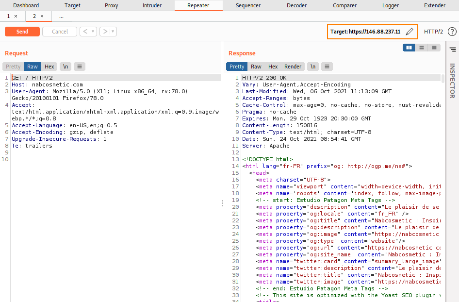
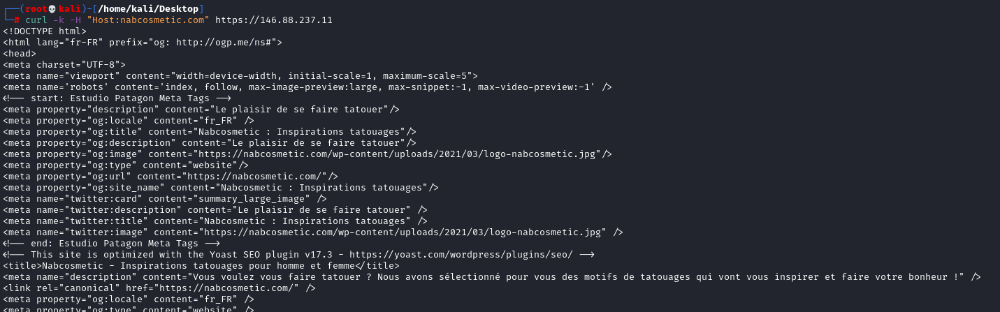

3. Check if domain is configured on one of the IP found
Once we have a list of web
server IP, the next step is to check if the protected domain(by a firewall) is configured on one of them as
a virtual host.
If the Target Ip address load the Webpage of the website we have found an entry point ( in the
example not because it is the same address of cloudflare)
BurpSuite Curl
curl -k -H "Host:nabcosmetic.com" https://146.88.237.11
